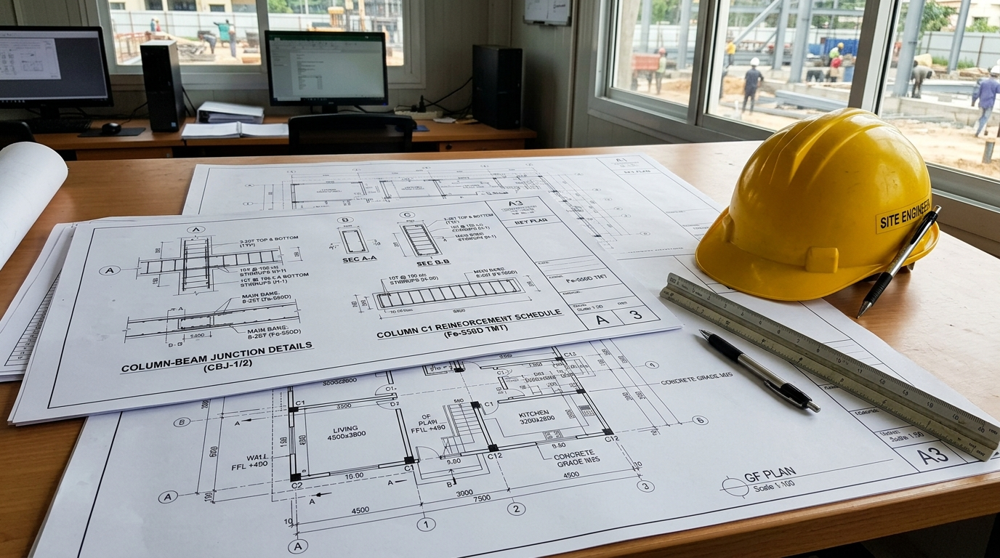
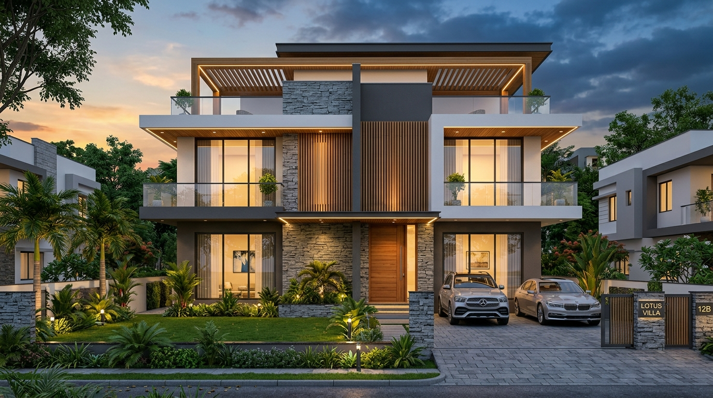
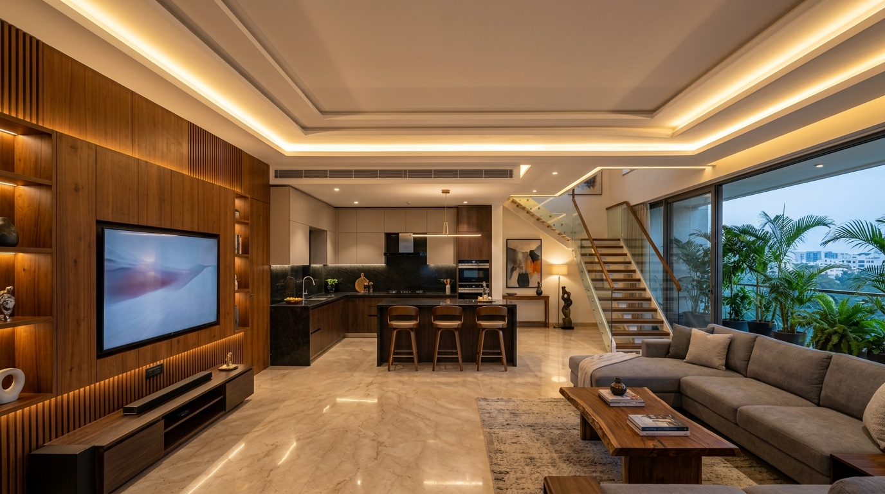

Why Blueprint Planning Is Critical in Bangalore
Building a custom home or independent villa in Bangalore is an exciting journey. From plot selection in fast-growing suburbs like Electronic City, Kanakapura Road, and Sarjapur to redevelopment projects in established neighborhoods like Jayanagar or Malleshwaram, turning a vacant site into a dream home requires meticulous preparation.
However, many plot owners jump straight into excavation without fully finalized architectural design and structural drawings. In Bangalore’s urban climate—where plot dimensions like 30x40, 30x50, and 40x60 are common—improper planning leads to spatial inefficiency, unexpected material wastage, budget overruns, and delays during authority approvals.
Core Drawing Sets Required for Construction
A complete residential construction package involves three distinct drawing stages before breaking ground. Each stage answers specific engineering, municipal, and functional demands to turn raw earth into a structurally sound, luxurious residence:
Architectural Plans
- 2D Floor Layouts & Circulation
- BBMP / BDA Bylaws & Setbacks
- Door, Window & Lintel Schedules
- Daylighting & Cross-Ventilation
- Pancha Bhoota Vastu Orientation
Structural Drawings
- Foundation & Column Grid Layout
- Soil Safe Bearing Capacity (SBC) Match
- Beam & Slab Steel Schedules
- Fe-550D TMT Rebar Detailing
- Staircase & Water Sump RCC Blueprints
3D Elevation & MEP
- Exterior Front & Corner Renders
- Concealed Plumbing & Sanitary Slopes
- Electrical Conduits & Switch Grids
- HVAC & Core Cutout Mapping
- Facade Cladding & Lighting Detailing

Key Considerations for Standard Bangalore Plot Sizes
Spatial blueprints must adapt directly to local site dimensions and regulatory frameworks. In Bangalore, plot geometry, road widths, sun trajectories, and BBMP setback norms define whether your living spaces feel cramped or expansive:
| Plot Dimension | Built-Up Area | Common Typology | Recommended Strategy |
|---|---|---|---|
|
30x40 Site
1,200 sq. ft. Plot
|
1,200 sq. ft. | 3BHK Duplex / 2BHK + Rent | Light shafts / cutouts for ventilation; covered parking bay integrated. Open floor plans maximize perceived volume while maintaining strict BBMP setbacks. |
|
30x50 Site
1,500 sq. ft. Plot
|
1,500 sq. ft. | 4BHK Duplex / G+2 Units | Double-height living space, dedicated home office, open kitchen utility. Strategic courtyard cutouts illuminate central corridors naturally throughout Bangalore's monsoon and summer seasons. |
|
40x60 Site
2,400 sq. ft. Plot
|
2,400 sq. ft. | Luxury Villa / Residence | Landscaped setback gardens, home theater, private hydraulic lift provision, servant quarters. Generous side setbacks provide all-around daylight and perimeter ventilation. |

5 Critical Risks of Skipping Professional Drawings
Constructing without detailed architectural and engineering blueprints creates immediate financial and structural vulnerabilities. Homeowners who rely solely on masonry contractors without working drawings face severe budget blowouts:
BBMP Approval Delays & Heavy Sanction Fines
Non-compliant floor plans risk immediate rejection or costly fines during plan sanctioning for failing setback or Floor Area Ratio (FAR) rules. Without verified municipal sanction drawings, obtaining permanent BESCOM power, BWSSB water lines, and Occupancy Certificates (OC) becomes an expensive legal ordeal.
Excessive Material Wastage (15% to 20% Financial Loss)
Without a precise Bill of Quantities (BOQ) derived from structural drawings, ordering cement, steel, and aggregates leads to 15-20% material loss. Over-ordering leads to spoiled cement bags in rainy weather, while arbitrary rebar cutting generates tons of useless steel scrap.
Costly On-Site Rework & Chipping of RCC Slabs
Breaking newly cast walls or concrete slabs to reroute electrical conduits and plumbing because MEP layouts weren't finalized in advance. Chipping cured concrete compromises cover thickness, exposes rebar to moisture corrosion, and causes persistent ceiling leaks.
Poor Indoor Ventilation & Suffocating Dark Rooms
In closely packed Bangalore residential sites, missing light wells results in gloomy, dark rooms requiring continuous artificial lighting. Poorly calculated window-to-floor ratios trap humidity and trap heat in Bangalore's urban heat micro-climates.
Lack of Contractor Accountability & Structural Compromises
Lacking working drawings leaves civil contractors without clear technical standards, increasing the risk of structural compromises. Masonry contractors often substitute steel grades or reduce column dimensions without structural calculation, leading to foundation settlement cracks.
Integrating Structure with Interior Architecture
A well-built shell works best when synced early with interior design layouts. Finalizing interior drawings alongside structural plans ensures seamless execution without unsightly exposed wires, surface hacking, or delayed handovers:
Custom Joinery & Outlets
Sockets, TV wall conduits, and modular kitchen plumbing align perfectly with your planned furniture positions. Wall backplates and cable drops remain completely concealed.
False Ceiling & HVAC
Ambient cove lighting, ceiling fans, and air conditioning ducts are pre-routed before plastering. Prevents ugly trunking or dropping ceiling heights unnecessarily.
Material Palette Finalization
Pre-selecting granite, Italian marble, teakwood, or UPVC window profiles during design prevents unexpected budget overruns and ensures structural floor loads match flooring weights.

Frequently Asked Questions: House Design in Bangalore
Municipal sanction drawings are simplified 2D line diagrams submitted to BBMP or BDA solely to demonstrate compliance with setbacks, FAR, ground coverage, and rainwater harvesting bylaws. In contrast, structural working drawings are detailed engineering documents indicating exact rebar cutting lengths, steel diameters (Fe-550D), column lap splices, concrete mix designs (M20/M25), and beam reinforcements essential for site masons and civil engineers.
Bengaluru’s soil geology varies drastically within just a few kilometers. Sites in Horamavu or Yelahanka often have hard red murrum, while sites in Sarjapur, Varthur, or Bellandur may sit on soft black cotton clay or backfilled agricultural lakebeds. Geotechnical soil testing determines the exact Safe Bearing Capacity (SBC), preventing catastrophic differential settlement or wall cracks down the line.
On compact Bangalore plots, adjacent buildings often block direct sunlight from side setbacks. At buildabo, our architects incorporate internal skylights, double-height light wells (cutouts), and central courtyard staircases that channel overhead sunlight down through multiple floors, making even narrow 30x40 layouts feel airy and luminous.
We mandate primary-producer Fe-550D TMT steel (such as JSW NeoSteel, Tata Tiscon, or Kamdhenu). The "D" designation stands for enhanced ductility, which provides vital seismic flexibility (Bengaluru falls under Seismic Zone II) and superior elongation during earth tremors, protecting your family and investment.
Ready to Start Your Dream Home Journey in Bangalore?
Planning to build an independent house, luxury duplex villa, or multi-story home in Bangalore? Our expert team of registered architects, structural engineers, and interior designers delivers end-to-end architectural design, BBMP plan approval support, 3D elevation visualization, and turn-key construction services across Bengaluru.
-
Studio & Office:
3rd Floor, 244, Kallumantapa, Horamavu, Bengaluru, Karnataka 560113 -
Direct Civil Engineer Line:
+91 96636 35559 -
Email Studio:
info@buildabo.in -
Working Hours:
Mon – Sat: 10:00 am – 6:30 pm (Sunday Closed)
Book Blueprint Consultation
Share your plot details in Bangalore. Our licensed architects will review your project within 24 hours.